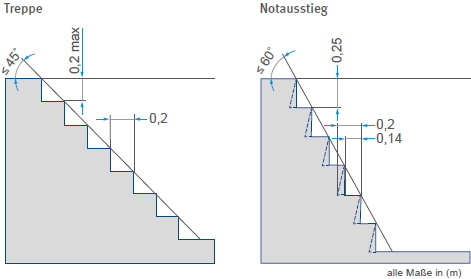

Viele Arbeiten an Fahrzeugen müssen an der Unterseite oder von der Unterseite her durchgeführt werden.
Um solche Arbeiten sicher ausführen zu können, ohne das Fahrzeug anheben zu müssen, werden Arbeitsgruben und Unterfluranlagen benutzt.
Unterfluranlagen unterscheiden sich von den Arbeitsgruben dadurch, dass:
Arbeitsgruben und Unterfluranlagen müssen so gebaut sein, dass sie leicht betreten und im Gefahrfall schnell verlassen werden können.
Die Treppen dürfen nicht steiler als 45° sein. Für Treppen, die ausschließlich als Notausstiege vorgesehen sind, ist ein Neigungswinkel bis 60° zulässig (Abb. 4-1).
Bei Neubauten ist die Länge der Arbeitsgruben so zu bemessen, dass die Ausgänge mit dem längsten zu erwartenden Fahrzeug nicht gleichzeitig verstellt werden können.
Werden Arbeitsgruben mit mehreren Fahrzeugen besetzt, dürfen die Ausgänge nicht gleichzeitig verstellt sein.

Abb. 4-1 Treppenmaße für Arbeitsgruben
Wenn erforderlich müssen zwischen den Fahrzeugen Einrichtungen für zusätzliche Ausstiege angebracht werden, z. B. Einhakleitern, Anlegeleitern, Tritte. Steigleitern sind weniger geeignet, Steigeisen sind unzulässig.
Arbeitsöffnungen von Arbeitsgruben und Unterfluranlagen stellen Löcher im Boden dar, in die Personen hineinstürzen können, wenn kein Fahrzeug über der Grube steht.
Sie müssen dann z. B.
Arbeitsöffnungen können auch mit Seilen oder Ketten abgesperrt werden.
Dann kann auch kein falscher sportlicher Ehrgeiz entwickelt werden, indem die offene Grube übersprungen wird, um einen Umweg um die Grube herum zu sparen.
Fahrzeuge dürfen nur dort verlassen oder bestiegen werden, wo ein Absturz in die Grube sicher verhindert ist.
Auf Sicherungen kann nur dann verzichtet werden, wenn z. B.:
Um ein Hineinstürzen in ungesicherte Arbeitsöffnungen zu vermeiden, dürfen Arbeiten, die an anderen Arbeitsplätzen ausgeführt werden können, nicht über und dicht neben diesen Arbeitsöffnungen vorgenommen werden, z. B.:
Arbeitsgruben und Unterfluranlagen gelten hinsichtlich der elektrischen Anlage nicht als explosionsgefährdet. Unter Berücksichtigung der besonderen Gefahren von Bränden in Gruben empfiehlt sich jedoch eine explosionsgeschützte elektrische Ausrüstung (siehe Abschnitt 5.2).
Arbeitsgruben und Unterfluranlagen sind jedoch in jedem Falle wie Waschanlagen und Gruben in Waschanlagen als "feuchte" und "nasse Räume" im Sinne der VDE-Bestimmungen anzusehen.